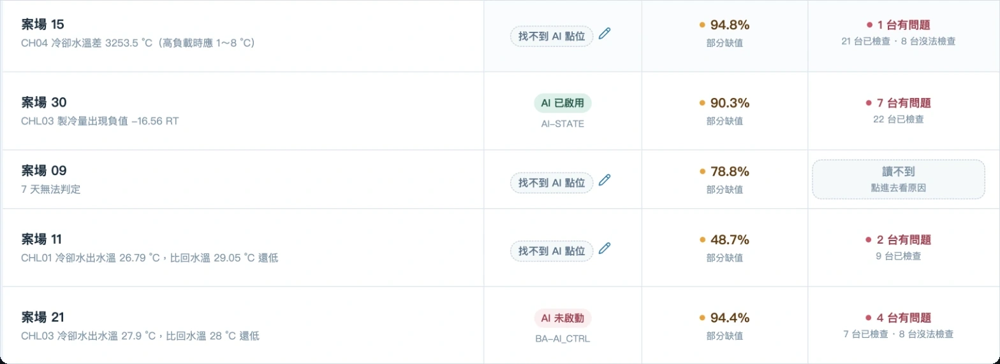
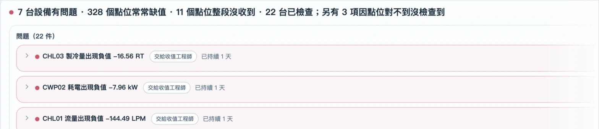
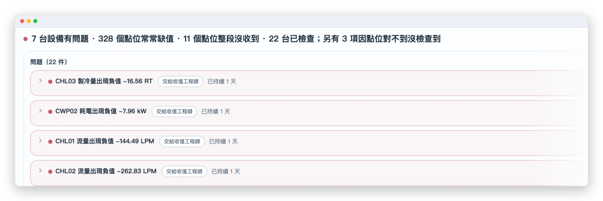

許承澤 Kevin Hsu
Senior Product Manager
我找出卡住產能的那一步，
親手做出工具
拿掉它
PM 改一格資料，
都要
等工程師
文件來回
→
排工程師
→
做完才驗證
卡在 12%
釐清需求
→
做出 Prototype
→
確認需求
→
正式實作
需求處理
約 1 個月
→
約 1 週
客戶導入
約 2 週
→
約 2 小時
PM 自己完成，不含現場接線與控制策略
用 Claude Code 親手開發
0
次提交


回覆客戶
一天
→
10 分鐘
單一案場客製占比
30%
→
30%
單一案場異常處理
30 分鐘
→
30 分鐘

控制策略調整
1 週
超過
0
萬種組合
一次試算
2019–2024 帶團隊交付
10 位
帶過的工程師
300 → 1,000
單／日 (+233%)
出貨量
2022 優選
PMI 台灣分會標竿專案獎
2025 起
親手做出工具
從釐清需求到 Prototype，自己跑完
2019
2020
2021
2022
2023
2024
2025
找出
痛點
，
做出
解法
，
量出
成果
。
許承澤
Kevin Hsu
Senior Product Manager
看履歷與案例 →
許承澤 Kevin Hsu
以前
現在
親手做
增效
降本
親手做
成長